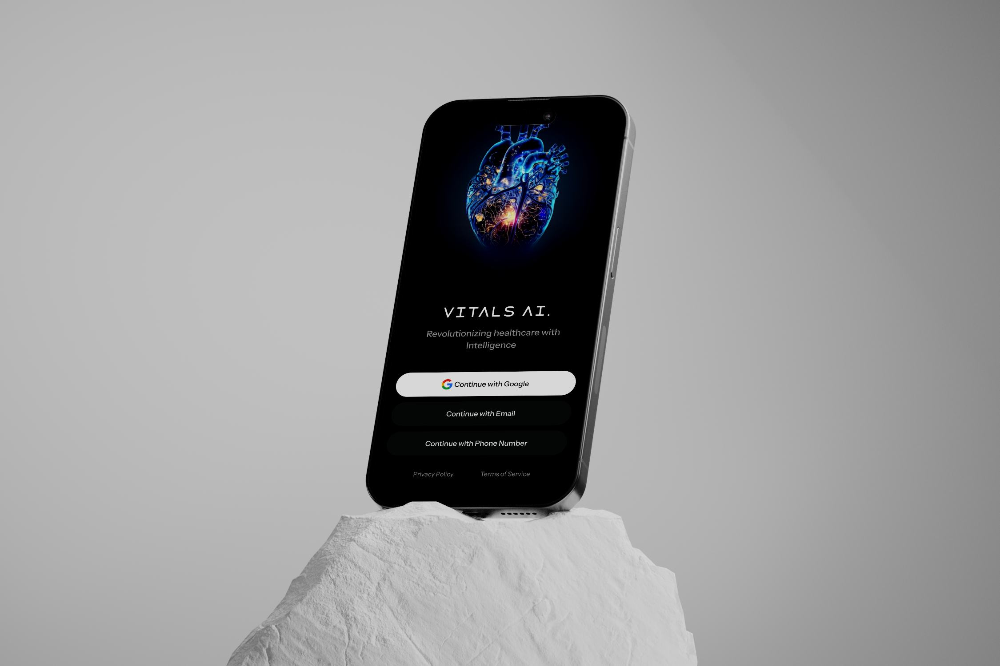
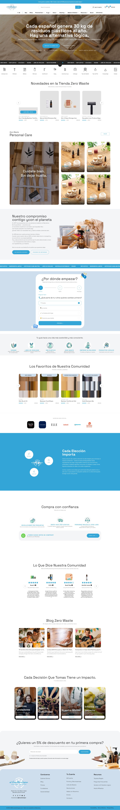

Products, systems & experiences I've helped shape.
A focused selection of product, web and mobile work across learning, AI automation, QA, healthcare and enterprise experiences — each case study gets its own page with problem framing, users, IA, flows, design system, final product and impact.
Showing all projects
MyNuclo
Learning marketplace and LMS ecosystem spanning learners, administrators, assessments, payments and enterprise workflows.
View case study ↗
Vital AI
AI-assisted healthcare experience covering consultation, appointments, knowledge, prescriptions and medical workflows.
View case study ↗AutoCRUD
Visual workflows for AI agents, conditions, APIs and automation.
View case study ↗TestKase
AI-assisted test management from user stories to execution and reporting.
View case study ↗Ortum
Coaching experience designed around guidance, reflection and next-step actions.
View case study ↗Onified.ai
Responsive enterprise resource intelligence experience with clear solution storytelling.
View case study ↗
El Cambio Lógico
Zero-waste commerce experience combining discovery, education and purchase.
View case study ↗Want to talk through a product challenge?
Let's connect and explore the problem, the users, and what a strong product experience could look like.